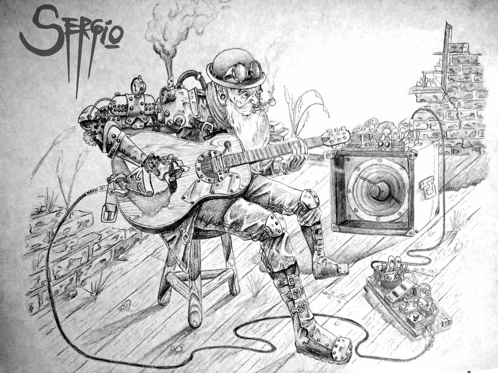

Algunas experiencias y quien soy
Hola yo me llamo Sergio Ponce, soy ilustrador, me gustan los comics la
animacion y el anime lo que me llevo a estudiar historieta (aunque sin concluir).
Dibujo desde muy chico fui perfeccionandome solo, ahora estoy entrando en el
dibujo digital y aprendiendo a usar las herramientas que este nuevo mundo me ofrece.
 Hace poco empecé a dibujar en la computadora,
con muy pocos conocimientos en los programas y sus herramientas.
Hace poco empecé a dibujar en la computadora,
con muy pocos conocimientos en los programas y sus herramientas.
Descubri que es otro mundo, otra forma de pensar donde las unicas
limitaciones son las que ponemos nosotros, la falta de conocimiento,
el no saber que existen mil maneras para hacer lo que querramos nos deja
encasillados en sola mente tirar un par de trazos y pintar un poco.
Al principio y para ir probando empecé con mause. Al contrario de lo que algunos creen,
teniendo el programa correcto se puede dibujar libremente,
es menos intuitivo ya que el mouse no esta hecho para eso pero igual
mente dandose maña se pueden lograr ilustraciones con un muy buen acabado.
Pero todo cambió cuándo me consegui la tableta para dibujar,
en el concepto la tableta digitalizadora es lo mismo que usar una hoja y un lapiz,
con algunos botones de mas.
Leyendo por ahi decían que era muy difícil acostumbrarse a usar el lapiz,
pero para mi fue como si lo hubiera hecho desde siempre. Lo mas difícil, para variar,
fue la configuración en los programas, el uso de los pinceles correctos y sus ajustes
para lograr la terminación que yo queria.
Si bien todos los problemas de saber usar el programa se solucionan con uno o dos videos de YouTube,
lo que te enseñan es e poner los pinceles como a ellos les gusta trabajar con sus estilos de
pinceles obligandote a dibujar como ellos, eso no seria un gran problema si uno tiene un estilo
propio y definido donde configura todo para dibujar como le gusta, pero para mi que no tengo ningun
estilo definido que siempre estoy busca una manera diferente de estetics con un estilo diferente en
cada dibujo, lo unico que me queda es seguir jugando con los valores de cada pincel.
 El dibujo de toda la vida, un lapiz común y una
hoja cualquiera es lo que tenes siempre a mano y por supuesto si te gusta dibujar desde
chico, todos los días y sin ninguna obligación o compromiso, un día te das cuenta de que se
te hace sencillo, sin querer sabes varias técnicas de dibujo y lo haces mejor que las personas
que te incentivaron en primer lugar, o por lo menos así fue conmigo.
El dibujo de toda la vida, un lapiz común y una
hoja cualquiera es lo que tenes siempre a mano y por supuesto si te gusta dibujar desde
chico, todos los días y sin ninguna obligación o compromiso, un día te das cuenta de que se
te hace sencillo, sin querer sabes varias técnicas de dibujo y lo haces mejor que las personas
que te incentivaron en primer lugar, o por lo menos así fue conmigo.
Ya un poco mas grande fui investigando por mi parte algunas técnicas mas difíciles, distintos lápices,
tipos de hojas, tintas, pinturas y pinceles todo por cuenta mia.
Trate de estudiar dibujo y pintura pero no funciono para mi, despues entre a estudiar historieta, que
fue lo que siempre me gusto, en ese momento aperendi anatomia para dibujar y composición de imagen lo
que me dio un empujon mas.
Pero no todo siempre es bueno, llegado el momento empecé a encontrar limites no en la ilustracio, siempre
se puede perfeccionar, sino en los materiales. Para lograr colores mas brillantes tenia que comprar
mejores pinturas, mejores hojas para soportar la humedad de las tintas, los lapices no son color
puro los negros no cubren bien, las hojas se rompen.
Asi mire para un costado y estaba la computadora. Todavia sigo dibujando en hoja pero los termino
digitalmente.